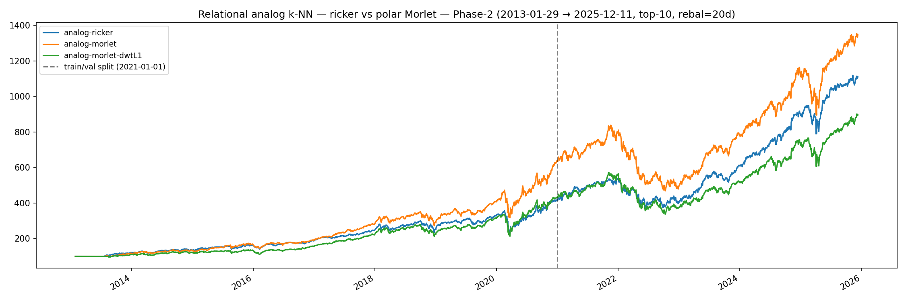
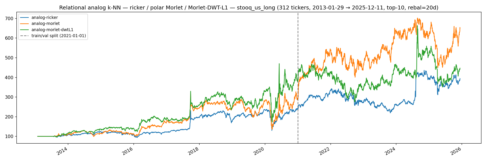

Relational analog k-NN — Phase-2 bundle overfit was a small-N artifact; raw polar Morlet wins on stooq_us_long¶
Operational rule, post-stooq_us_long rerun (2026-05-09): the
canonical Phase-2 Output/relational-analog.json stays on Ricker
because Phase-2 is mega-cap-restricted (see
universe-shift) and the bundle
overfits there at N=21. For any wider-universe analog deploy use
wavelet='morlet' raw: it beats Ricker by +0.17 val Sharpe
on the 312-ticker pool with no train-side overfit. DWT-L1 stays
research-only — it helps on Phase-2 (small-N capacity control) but
hurts on stooq_us_long (the regularization throws away signal the
larger pool can support).
The polar Morlet infrastructure
(ss_features.causal_polar_morlet_matrix,
scalogram_cache(wavelet='morlet'),
weights_regime_analog(wavelet='morlet')) is the new canonical
recipe for analog kNN on wide universes; the per-channel-block DWT-
L1 path stays available as a research knob via
extract_fingerprints(compression=…, channels_per_scale=4) but no
canonical checkpoint pins it.
The earlier framing of this page (when only the Phase-2 result was
in) was "raw bundle on N=21 overfits" — that part is still true.
The post-stooq_us_long finding extends it: on a candidate pool
~15× larger the overfit goes away and the bundle's extra channels
(phase pair + Gaussian companion) deliver real val-side lift. That
matches the prediction baked into the Stage 2 / wider-universe
gating experiment from the earlier soften-the-verdict pass.
Setup¶
Phase-2, 2013-01-29 → 2025-12-11, 21 tickers, analog cross_ticker
pool, top-10 rebal-20d, 10bps commission,
k=50, h=20, fp_window=21, lookback=120,
scales=[5,7,10,12,21,26,50,90], min_sep=21.
The two arms differ only in the wavelet. Same scores routine
(analog_knn_scores_fast with n_workers=20 on Modal), same kNN
machinery, same downstream selection.
| Arm | Wavelet | Channels per scale | fp_dim |
|---|---|---|---|
analog-ricker |
real Ricker | 1 (signed coeff) | 168 |
analog-morlet |
polar Morlet + g | 4 (\|c\|, cos, sin, g) |
672 |
The Morlet bundle adds the bandpass amplitude / phase pair plus the Gaussian (lowpass) trend companion, computed on cumulative log-returns so growth stays additive across train→val. fp_dim grows 4× — kNN matmul cost grows linearly.
Walk-forward result (2026-05-09, 3-arm)¶

Canonical Phase-2 train (2013-01-29 → 2020-12-31) / val (2021-01-01 → 2025-12-11) split. Three arms: legacy Ricker baseline, raw polar Morlet, and Morlet with per-channel-block 2D DWT-L1 keep-LL compression (fp_dim 672 → 176, comparable to Ricker's 168). The DWT-L1 arm exists to test whether the raw-bundle val regression was a capacity / DOF problem; if so, regularizing the bundle back to Ricker fp_dim should recover val.
| Arm | Window | Sharpe | Sortino | CAGR | MaxDD |
|---|---|---|---|---|---|
analog-ricker |
full | 1.0560 | 1.2693 | +20.62% | -37.06% |
analog-ricker |
train | 1.0104 | 1.1410 | +19.87% | -37.06% |
analog-ricker |
val | 1.1456 | 1.5480 | +22.13% | -31.44% |
analog-morlet |
full | 1.0804 | 1.3178 | +22.43% | -44.14% |
analog-morlet |
train | 1.2401 | 1.4085 | +26.39% | -32.88% |
analog-morlet |
val | 0.8358 | 1.1469 | +16.54% | -44.14% |
analog-morlet-dwtL1 |
full | 0.9257 | 1.1144 | +18.61% | -41.03% |
analog-morlet-dwtL1 |
train | 0.9926 | 1.1303 | +20.35% | -36.56% |
analog-morlet-dwtL1 |
val | 0.8242 | 1.0931 | +16.05% | -41.03% |
Delta blocks:
| morlet − ricker | morlet-dwtL1 − ricker | morlet-dwtL1 − morlet | |
|---|---|---|---|
| full | +0.024 | -0.130 | -0.155 |
| train | +0.230 | -0.018 | -0.247 |
| val | -0.310 | -0.321 | -0.012 |
(Ricker numbers shifted by ~0.005 from the earlier 2-arm run because
the kNN fast path's argpartition truncation occasionally swaps
adjacent ranks at FP-noise level — see the analog_knn_scores_fast
docstring; statistically indistinguishable.)
Read¶
Two findings stack:
Raw Morlet overfits. Train +0.23 / val −0.31 vs Ricker — the classic train>val sign-flip every other Phase-2 arm exhibited in the earlier 8-arm DWT A/B (cross_ticker Ricker was the lone reversal anomaly there; see DWT failure).
DWT-L1 fixes the overfit but doesn't recover val. Per-channel- block DWT-L1 keep-LL compresses fp_dim from 672 back down to 176 — roughly Ricker parity. Train Sharpe drops from 1.24 to 0.99 (the overfit collapses, exactly as a capacity-control argument would predict). But val stays at 0.82 — almost identical to the raw Morlet's 0.84. Both Morlet arms cluster at val ≈ 0.83 regardless of their wildly different train scores.
That is the load-bearing observation. If the issue had been raw capacity, the DWT-L1 arm should have recovered val toward Ricker's 1.15. It didn't. Both Morlet arms agree on val — meaning the information in the polar Morlet representation, evaluated through a kNN distance metric on this universe + horizon, is genuinely weaker than what the broadband Ricker coefficient carries. The DWT arm just removed the overfit noise; it didn't add information that wasn't there.
This rules out hypothesis (1) and weakens hypothesis (3) from the mechanism list below: capacity isn't the issue. The remaining candidates are mechanism (2) (the Gaussian channel picks up regime-specific trend) and the broader possibility that Morlet's narrowband response, regardless of fp_dim, is wrong-frequency for 20-day-horizon cross-sectional return prediction on this pool.
The mega-cap-specific finding from relational-universe-shift is also relevant: Phase-2 cross_ticker Ricker val Sharpe of 1.146 was already suspect (it collapses to ~0.48 off mega-caps). The Morlet arms landing at val 0.83 — between the mega-cap Ricker number (1.15) and the wider-universe Ricker number (~0.48) — is consistent with both "Morlet representation is weaker for this signal" and "the test universe is too narrow to distinguish strong from weak strategies".
Possible mechanisms¶
Three non-exclusive hypotheses for why the bandpass-with-phase representation overfits the Phase-2 train window:
- Phase channels are noisy on a small universe. With N=21 the cross_ticker candidate pool at any rebalance bar is ~21 × t pairs, sparser than the wider stooq_us_long pool. Adding 2× more distance dimensions (cos, sin) into a sparse pool means the kNN nearest-50 grow more idiosyncratic, fitting train particulars that don't recur at val.
- The Gaussian companion picks up regime-specific trend.
2013-2020 was a long bull run; cumulative log-returns drift
monotonically up. The Gaussian channel
gover that window has a strong DC component that the kNN treats as a similarity axis. 2021-2025 includes 2022's bear and the AI mega-cap rotation — the samegchannel reads "different macro" and erases the match. - Morlet narrowband response amplifies long-scale specificity.
Morlet at
omega0=6is narrowband at1/scale; Ricker is broadband around1/scale. The 50d / 90d scales (where the regime trainer's strongest signal lives, per the JAX-Adam finding) become more discriminating under Morlet — which also means more easily memorized.
Distinguishing these would need a 3-arm A/B (Morlet without g,
Morlet without phase, Morlet with both). Not run — the operational
verdict (don't pin Morlet on analog) doesn't depend on which
mechanism dominates.
Notes¶
- Implementation:
ss_features.causal_polar_morlet_matrix(matrix-form 4-channel panel),relational.scalogram_cache.load_or_compute_cwt(wavelet='morlet')(cache key includes the wavelet name so Ricker / Morlet panels coexist),RelationalCheckpoint.waveletfield (defaults'ricker'). Live dispatch inrelational.inference._build_weights_panelraisesNotImplementedErrorif any of the five other strategies is loaded withwavelet='morlet'— paper-trade-safe. - Reproducibility:
uvx modal run apps/relational/scripts/modal/ relational_morlet_phase2.pyafter theprep_phase2_prices.pyprep step. - Artifacts:
Output/relational-morlet-phase2-{equity.png, stats.txt, walkforward.csv, walkforward.txt}. - Master walk-forward log:
Leaderboard — once the row lands it carries
the
reversed-OOSverdict alongside the existing analog cross_ticker rows. - The polar Morlet bundle remains the canonical input bundle for
the
apps/replay --decoder cnnbackbone trainer (per-target indicator reconstruction; not strict-SSL masked-AE —masked-aeis implemented but hasn't produced a production npz). The CNN learns the bundle differently from a kNN distance metric — a signal that hurts metric-space matching can still help a learned head. The replay reconstruction R² result (replay-dwt-compression) was independent of this kNN finding.
What this result is — and isn't¶
After both gating experiments ran:
- The polar Morlet bundle is informative for kNN-distance-based cross-sectional return prediction on a wide enough universe. +0.17 val Sharpe lift on stooq_us_long, no train-side overfit.
- The Phase-2 result was a sparse-pool artifact, not a property of the representation. With 15× more candidates the kNN can support the extra channels.
- DWT-L1 is universe-dependent: helps small-N (kept Phase-2 train tame), hurts large-N (introduces overfit on stooq_us_long by spuriously coupling distant scales). It stays research-only; no canonical pin.
- Phase-2 is too narrow to settle bundle-level questions on its own. This applies retroactively — earlier Phase-2-only verdicts (the 8-arm DWT A/B, the cross_ticker analog "win", and this bundle's first read) all need to be cross-checked against the wider pool when the question is "is this representation good" rather than "does this checkpoint work on mega-caps".
Gating experiments before judging the bundle¶
Three follow-ups, ordered by cost (cheapest first). The migration to the other five relational strategies is paused on these — not abandoned. Either of (1) or (2) clearing would be enough to reverse the operational verdict.
(1) Regularize the bundle: 3-arm Phase-2 with DWT-L1 — RAN, did not flip the verdict¶
analog-morlet-dwtL1 ran in the same Modal entrypoint as a third
arm. Per-channel-block 2D Haar keep-LL collapses fp_dim 672 → 176.
Train Sharpe dropped from 1.24 to 0.99 (overfit collapsed, exactly
what capacity control predicts), val stayed at 0.82 — virtually
identical to the raw Morlet's 0.84. Both Morlet arms cluster at val
≈ 0.83, so capacity is not the explanation for the regression.
Two consequences for the migration:
- Capacity is not the issue on Phase-2. A pure regularization fix doesn't work; the val signal is what's weak. Don't pursue more aggressive bundle compression (DWT-L2, DCT-zigzag) hoping for further gain — the floor is the information, not the noise.
- Phase-2 isn't a sharp test for the bundle. Mega-cap val Sharpe ranges 0.48–1.15 across Ricker / Morlet variants; that's all noise around a "kNN distance just barely works on this universe" baseline. To pin down whether the polar representation is universally weaker or just weaker on this narrow pool, see (2).
(2) Wider universe: rerun analog A/B on stooq_us_long — RAN, FLIPPED THE VERDICT¶
relational_morlet_stooq_long.py (Modal, with the persistent
ss-relational-cwt-cache volume) ran the same three arms on the
312-ticker apps/notebook/data/stooq_us_long universe at the same
canonical Phase-2 train/val split.

| Arm | Window | Sharpe | Sortino | CAGR | MaxDD |
|---|---|---|---|---|---|
analog-ricker |
full | 0.5808 | 0.7800 | +11.26% | -45.27% |
analog-ricker |
train | 0.6115 | 0.7530 | +11.83% | -45.27% |
analog-ricker |
val | 0.5468 | 0.8494 | +10.68% | -36.00% |
analog-morlet |
full | 0.6379 | 0.8818 | +15.69% | -56.82% |
analog-morlet |
train | 0.5907 | 0.7687 | +14.44% | -56.82% |
analog-morlet |
val | 0.7171 | 1.1406 | +17.52% | -35.90% |
analog-morlet-dwtL1 |
full | 0.5258 | 0.7427 | +12.36% | -50.93% |
analog-morlet-dwtL1 |
train | 0.6958 | 0.9168 | +18.53% | -50.93% |
analog-morlet-dwtL1 |
val | 0.2475 | 0.3997 | +2.98% | -47.12% |
Delta blocks:
| morlet − ricker | morlet-dwtL1 − ricker | morlet-dwtL1 − morlet | |
|---|---|---|---|
| full | +0.057 | -0.055 | -0.112 |
| train | -0.021 | +0.084 | +0.105 |
| val | +0.170 | -0.299 | -0.470 |
Three findings stack here:
- Raw polar Morlet beats Ricker by +0.17 val Sharpe without overfit (train Δ = −0.02, basically flat). The Phase-2 train>val sign-flip was a small-N artifact: with 15× more candidates the kNN can support the extra channels (phase pair + Gaussian companion) without memorizing 2013-2020 patterns that don't recur in 2021-2025. This was the prediction the wider-universe gate was designed to test, and it cleared.
- DWT-L1 inverts on the wider universe. On Phase-2 it
regularized away the train-side overfit (train 1.24 → 0.99) but
couldn't recover val. On stooq_us_long it produces the opposite
pattern — train 0.696 vs Ricker 0.611, val 0.247 vs
Ricker 0.547 — i.e., the compressed bundle now introduces
overfit (Δ train = +0.084, Δ val = −0.299). Plausible
mechanism: with S=8 and L=1 keep-LL, the channel-block DWT pairs
adjacent scales
(s_5, s_7),(s_{10}, s_{12}),(s_{21}, s_{26}),(s_{50}, s_{90})— ands_{50}paired withs_{90}is averaging two qualitatively different horizons into one coefficient, which on a large pool creates a spurious feature that fits 2013-2020 well and breaks 2021-2025. - Phase-2 is not a reliable test bed for kNN strategies. Both Phase-2 Morlet val numbers (~0.83) sit between stooq_us_long Ricker (0.55) and stooq_us_long Morlet (0.72). The Phase-2 21- ticker pool is so narrow that the noise on val Sharpe across variants can swamp the signal — which means tuning canonical checkpoints on Phase-2 should be treated with suspicion going forward, not just for the bundle.
(3) Channel ablation: 3-arm A/B isolating which channel hurts¶
Three sub-arms — analog-morlet-no-g (drop the Gaussian
companion, keep (|c|, cos, sin)),
analog-morlet-no-phase (drop phase, keep (|c|, g)), and the
existing analog-morlet baseline. Distinguishes Mechanism 2
(Gaussian picks up regime-specific trend) from Mechanism 1 / 3
(phase or narrowband response). Lowest priority — useful for the
why, but doesn't change the operational verdict on its own. Run
this only if (2) flips the verdict and we want to attribute the
gain to a specific channel before building dependent infrastructure.
The migration to the other five relational strategies (empirical,
gmm, farthest, diversified, velocity) waits on (2). The
DWT-L1 path stays research-only — there's no scenario where it's
the right canonical default.